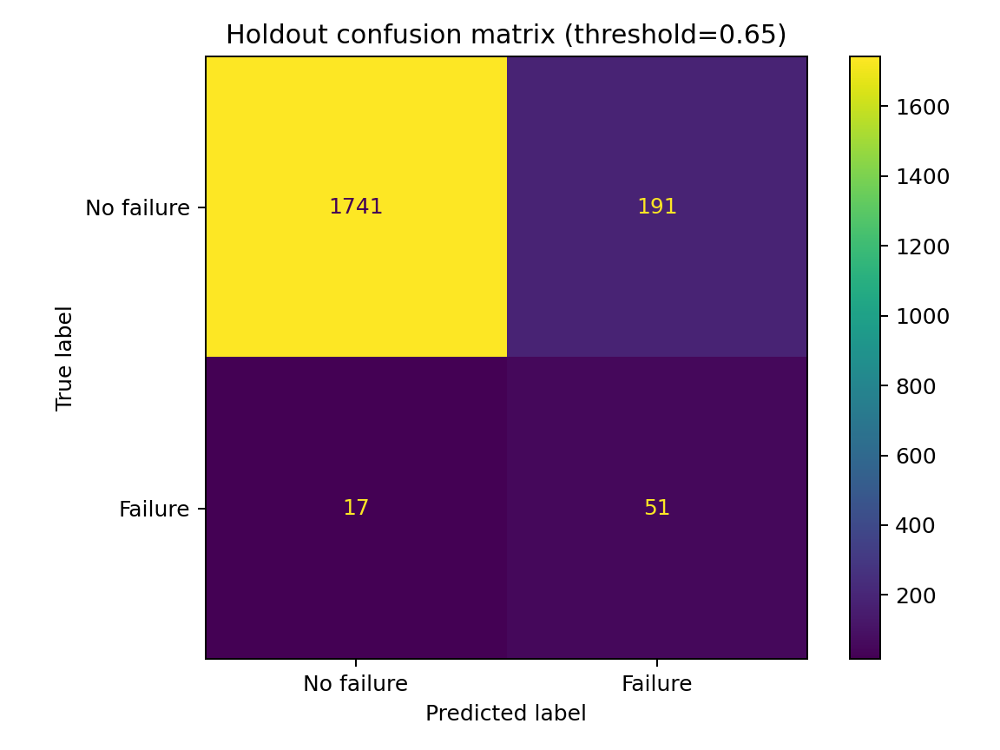

MACHINE LEARNING · A PROJECT BY TARIK ALANSARI
Predictive
Maintenance
I built a tool that reads machine measurements and suggests which records may show a failure. The idea is to help a maintenance team decide what to check—not to replace their judgment.
HOW IT WORKS
Read the measurements. Flag a possible problem.
Think of each record as a snapshot: how hot the machine is, how fast it is turning, and how worn its tool is. The dataset also says whether a failure occurred, so I can check whether the model gets it right. These are simulated records, not readings from a live factory.
- 01
Read the machine data
Use temperature, rotation speed, turning force, and tool wear. Leave out fields that already reveal a failure.
- 02
Learn signs of trouble
Train the model to distinguish failure records from normal ones, giving extra attention to the less common failures.
- 03
Check the alerts
Choose when to raise an alert, then count correct alerts, missed failures, and false alarms on new test records.
THE RESULTS
It caught 51 of the 68 failures.
Of the 2,000 test records, 68 represented failures. Here is what happened when the tool checked them:
See the test-results chart
The chart counts correct predictions and mistakes. Tap it to view it larger.

How to read the chart
The rows show what actually happened; the columns show what the model predicted. Matching outcomes are correct predictions. The other two boxes are missed failures and false alarms.
Data, methods & full results
Six operational features
The UCI AI4I 2020 dataset contains 10,000 synthetic manufacturing records. Inputs are product type, air temperature, process temperature, rotational speed, torque, and tool wear. Identifiers and the five failure-mode columns are excluded to prevent target leakage.
A separate test set
An 80/20 stratified split preserves the rare-failure balance, using random seed 42. The model is class-weighted logistic regression. Five-fold cross-validation generates out-of-fold training predictions for threshold selection.
The threshold is selected to maximize failure recall while respecting a configurable false-positive-rate limit. It is then locked at 0.655 before evaluation on the 2,000-row test set. The chart title rounds this value to 0.65.
Verified test results
| Measure | Result |
|---|---|
| Failure recall · share of failures caught | 75.0% |
| Precision · share of alerts that were failures | 21.1% |
| False-positive rate · non-failures flagged | 9.9% |
| Precision–recall AUC | 0.382 |
| ROC AUC | 0.907 |
| Failures caught / missed | 51 / 17 |
| Correct non-failure predictions / false alarms | 1,741 / 191 |
What this demonstrates
A reproducible workflow for imbalanced classification, leakage prevention, and threshold tuning. The results describe classification on a synthetic dataset, not a deployed factory system or a measured advance warning time.
A synthetic-data case study. Real deployment would require maintenance cost estimates, drift monitoring, maintenance feedback, and prospective validation.